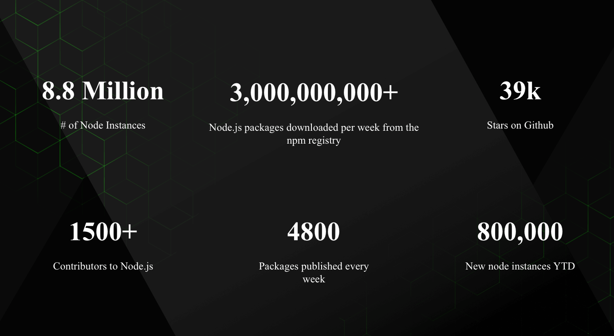

An short introduction
Chaitanya Mukka
History
- **May, 2009** : NodeJS was created by Ryan Dahl <img src="./lib/mem1.jpg" alt="mem1" style="text-align: center">
- **January, 2010** : [npm](https://npmjs.com) was introduced. ExpressJS released. <img src="./lib/Npm-logo.svg" alt="npm" style="text-align: center">
- **December, 2014** : [io.js](https://iojs.com) was forked out of NodeJS, to maintain it under `open governance model`.
- **September, 2015** : NodeJS foundation was formed and `io.js` was merged.
- **May, 2016** : `leftpad` incident. npm had `200k+` users.
- **2017** : `8.8mi` Node instances; `3bi.` npm packages downloaded/week. 
What is NodeJS?
It's not a new Language.
It's not a framework.
It's not a JavaScript library.
According to their website: > Node.js® is a JavaScript **<span style="color: mediumseagreen;">runtime</span>** built on Chrome’s **<span style="color: mediumseagreen;">V8</span>** JavaScript engine. > Node.js uses an **<span style="color: mediumseagreen;">event-driven, non-blocking I/O</span>** model that makes it lightweight and efficient. > Node.js’ package ecosystem, **<span style="color: mediumseagreen;">npm</span>**, is the largest ecosystem of open source libraries in the world.